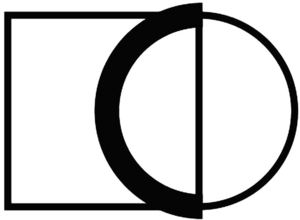

Trade Mark Journal No.2025/009 28 February 2025
WO0000001838938 (9,35,37,40,42)
Office of origin: European Union Intellectual Property Office (EUIPO)
Date of International Registration:17 October 2024
Date of designation in the UK:
17 October 2024

International priority date claimed: 25 April 2024
(European Union Intellectual Property Office (EUIPO))
(019018649)
- Class 9
- Downloadable and recorded computer software and hardware, including user documentation therefor in electronic format; electric measuring apparatus, electric signal processors and electric inspecting apparatus and instruments for control technology for use in the following fields: collection, evaluation and display of electronically transmitted data, simulation of the aforesaid data; computer hardware and computer software for electric vehicles, for charging stations for electric vehicles, for batteries, for battery boxes, for battery chargers and for battery charging devices for motor vehicles, for configuration, monitoring and control of charging processes.
- Class 35
- Organizational and business administration consulting, organisational assistance, business administration assistance, in the following fields: introduction, use and application of computer software, provision of maintenance services for computer software; retail and wholesale services, also via the internet and online and/or catalogue mail order services in relation to the sale of the following goods: computer hardware, computer software, including user documentation relating thereto in electronic format; retail and wholesale services, also via the internet and online and/or catalogue mail order services, in relation to the sale of the following goods: measuring, signalling, checking (supervision) apparatus and instruments for control engineering for acquisition, analysis and display of electronically transmitted data and for the simulation of such data; retail and wholesale services, also via the internet and online and/or catalogue mail order services, in relation to the sale of the following goods: hardware and software for electric vehicles, for charging stations for electric vehicles, for batteries, for battery boxes, for battery chargers and battery charging devices for motor vehicles, for configuration, monitoring and control of charging processes.
- Class 37
- Installation and maintenance in relation to the following goods: computer hardware for electric vehicles, charging stations for electric vehicles, for batteries, for battery boxes, for chargers for electric batteries and for battery-charging devices for motor vehicles; installation and maintenance in relation to the following goods: computer hardware for the configuration, monitoring and control of charging processes; computer hardware maintenance services; creating, installation and care in relation to the following goods: charging stations for electric vehicles, for batteries, for battery boxes, for chargers for electric batteries and for battery-charging devices for motor vehicles.
- Class 40
- Custom manufacture to order and to the specifications of the customer, in relation to the following goods: computer hardware for electric vehicles, charging stations for electric vehicles, for batteries, for battery boxes, for chargers for electric batteries and for battery-charging devices for motor vehicles; custom manufacture of the following goods: computer hardware for the configuration, monitoring and control of charging processes.
- Class 42
- Creating, installation and care in relation to the following goods: computer software programs; technical consultancy in the field of information technology in the following fields: introduction, use and application of computer software and maintenance of computer software; devising of technical solutions in the following fields: information technology; engineering development, relating to the following sectors: computer system integration solutions; computer hardware design, computer hardware development; creating, installation and care in relation to the following goods: computer software for electric vehicles; creating, installation and care in relation to the following goods: computer software for the configuration, monitoring and control of charging processes.
Vector Informatik GmbH
Representative: KANZLEI DR. ERBEN, Neuenheimer Landstr. 36, 69120 Heidelberg, GERMANY